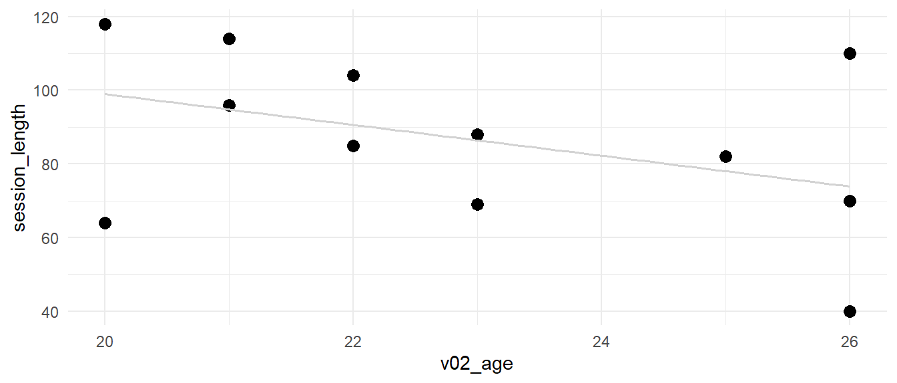
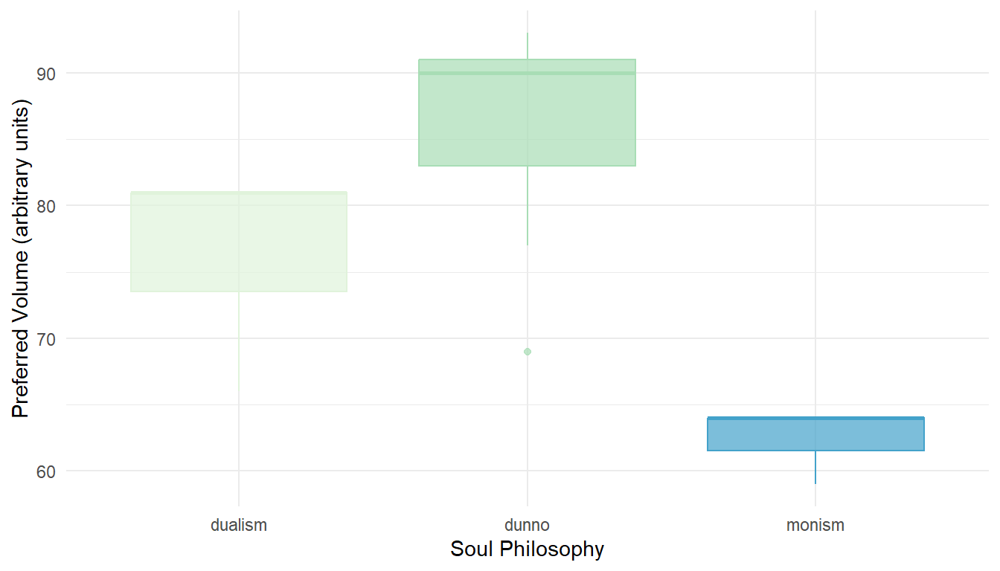
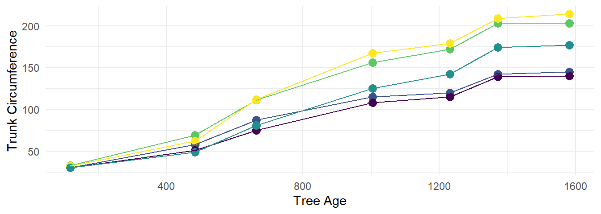

Chapter 9 Association Statistics
In this chapter we will look into the correlation and linear regression model in R.
I will assume that you have a basic understanding of what all statistics mentioned in this book are, as they are commonly used among psychologists. However, let's start with a brief statistics re-cap to be on the same page.
Both the correlation - usually reported with Pearson's r coefficient - and the regression - also known as (general) linear model - give us measures of association. The association can be positive (the larger x, the larger y) or negative (the larger x, the smaller y), which is reflected by the sign of the coefficient: r = 1 would be a perfect positive correlation and r = -1 would be a perfect negative correlation.
Hopefully, you have heard this one thousand times already, so let me tell you for the thousand and first time: Correlation does not imply causation. The correlation coefficient r only tells us about the direction and strength of the association and nothing about the causal relation. However, in the regression model we can check whether Y changes on the basis of X, so we can include assumptions of cause and effect in our model11
Figure 9.1: Age and circumference of orange trees shown in a scatterplot. We can see that there seems to be a positive relationship between the two measures: The older the tree, the larger the circumference.
9.1 Correlation
The pearson correlation coefficient r measures association between two numeric variables. The variables need to
- be continuous & interval-scaled
- be normally distributed & should have no outliers
- have a linear relationship.
Its range is from -1 to 1 which would mean a perfect negative or positive association, respectively. The closer r is to 0, the weaker the correlation.
Since there will usually be some variation and noise in the data, I believe it makes sense to get a feeling for what different associations might look like. So, you can play a game of "guess the correlation": Look at the four plots below and guess for each how strong the correlation could be be! Remember - a positive correlation means "the more X, the more Y" and a negative correlation means "the more X, the less Y".

9.2 Correlation in R
- Two main functions:
cor()calculates the correlationcor.test()calculates correlation and significance
- As input they both need only an x and a y variable
- You can specify some other aspects of the calculation, such as statistical method (e.g. "spearman") or how to deal with missing data
x <- 1:10
y <- sample(x, 10)
cor(x, y)
# [1] -0.3333333
cor.test(x, y)
#
# Pearson's product-moment correlation
#
# data: x and y
# t = -1, df = 8, p-value = 0.3466
# alternative hypothesis: true correlation is not equal to 0
# 95 percent confidence interval:
# -0.7959163 0.3749953
# sample estimates:
# cor
# -0.33333339.2.1 Handling missing data
- Many functions have an option for missing data or
NAs- You can often add the argument
na.rm = TRUEto a function for "NA remove"
- You can often add the argument
- In the
cor()function, we define to only use complete observations - With
use = "complete.obs"we define to only use pairs of observations that are not missing
9.2.2 Exercise
Is technology skill associated with seminar motivation?
Calculate a correlation test using cor.test() to analyze the question.
Try to formulate an interpretation as you would report it in a thesis or paper!
cor.test(seminar$v05_skill_tech, seminar$v10_motivation)
#
# Pearson's product-moment correlation
#
# data: seminar$v05_skill_tech and seminar$v10_motivation
# t = 1.386, df = 11, p-value = 0.1932
# alternative hypothesis: true correlation is not equal to 0
# 95 percent confidence interval:
# -0.2100186 0.7724602
# sample estimates:
# cor
# 0.3855856"With r = 0.386 there is a positive association of moderate strength between previous technological skill and motivation for the seminaR. This association is not significant (p = 0.193), likely due to the small sample size."
9.2.3 Quiz
Look at our seminar dataset by entering str(seminar) in the console.
Which of these correlations would work?
Choose "TRUE" if you think the correlation would work and "FALSE" if you think it would not.
You can look at the explanation for those that would not work below!
cor(seminar$v02_age, seminar$v04_bodyheightcor(seminar$v02_age, seminar$v08_loudness)cor(seminar$v08_loudness, seminar$v06_loc)
- There is a closing bracket missing
- The variable v06_loc has numbers, but they are recognized as characters!
9.3 Linear Regression
- Linear regression also works on numerical, normally distributed data
- We assume an association, and regression can help to look for causation
- There is one dependent variable y and one independent variable x
- In multiple linear regression, there can be several x
- Formula: \[ y = \beta_0 + \beta x + \epsilon \]
- What we are essentially doing is building a model for our data and checking how well it actually fits!
9.3.1 Build the model
- The R function for regression analysis is
lm()for linear model - It needs a "formula" as input - similar to the formula in the
t.test(), we need the ~- Read Y ~ X as "Y on the basis of/ given X"
- Our dependent variable Y goes first and our independent variable(s) go after the ~
- If the variables come from a data set, we need to specify data as well
9.3.2 Visual Inspection
ggplot(Orange, aes(x = age, y = circumference, color = age)) + geom_jitter(size = 3) +
geom_smooth(method = "lm", se=FALSE, color="lightgray",
linewidth = .7, formula = y ~ x) +
theme_minimal() +
labs(x = "Tree Age", y = "Trunk Circumference", title = "Do trees get thicker with age?") +
scale_color_distiller(palette = 7) +
theme(legend.position = "none")Figure 9.2: Scatterplot of orange tree age and cirumference from before with the regression line added. Notice that the variable which is used as the independent X (age) is plotted on the X axis for intuitive reading of the plot.
What could be problematic here?
9.3.3 Build the model
9.3.3.1 Do trees get thicker with age?
Treelm <- lm(formula = circumference ~ age, data = Orange)
Treelm
#
# Call:
# lm(formula = circumference ~ age, data = Orange)
#
# Coefficients:
# (Intercept) age
# 17.3997 0.1068- The lm alone gives us the mathematical formula
- To look at the statistical results, we need to use another function such as
print()orsummary()
9.3.4 Analyze the model
summary(Treelm)
#
# Call:
# lm(formula = circumference ~ age, data = Orange)
#
# Residuals:
# Min 1Q Median 3Q Max
# -46.310 -14.946 -0.076 19.697 45.111
#
# Coefficients:
# Estimate Std. Error t value Pr(>|t|)
# (Intercept) 17.399650 8.622660 2.018 0.0518 .
# age 0.106770 0.008277 12.900 1.93e-14 ***
# ---
# Signif. codes: 0 '***' 0.001 '**' 0.01 '*' 0.05 '.' 0.1 ' ' 1
#
# Residual standard error: 23.74 on 33 degrees of freedom
# Multiple R-squared: 0.8345, Adjusted R-squared: 0.8295
# F-statistic: 166.4 on 1 and 33 DF, p-value: 1.931e-14- Interpretation?
- Trees get larger circumferences the older they are, but this might be modulated by their Species, environment or other factors
9.3.5 Exercise
Does the age of a person have an influence on how long they took to complete the seminar survey (session length)?
Use the lm() function and report the significance level of the predictor as well as the model equation.
age_sess <- lm(session_length ~ v02_age, data = seminar)
summary(age_sess)
#
# Call:
# lm(formula = session_length ~ v02_age, data = seminar)
#
# Residuals:
# Min 1Q Median 3Q Max
# -34.978 -5.605 1.209 13.395 36.141
#
# Coefficients:
# Estimate Std. Error t value Pr(>|t|)
# (Intercept) 182.706 61.517 2.970 0.0127 *
# v02_age -4.186 2.689 -1.557 0.1478
# ---
# Signif. codes: 0 '***' 0.001 '**' 0.01 '*' 0.05 '.' 0.1 ' ' 1
#
# Residual standard error: 21.23 on 11 degrees of freedom
# Multiple R-squared: 0.1805, Adjusted R-squared: 0.106
# F-statistic: 2.423 on 1 and 11 DF, p-value: 0.1478"The age of a person does not significantly predict the time it took them to complete the survey (p = .148). The model equation is 182.7 -4.19X with age explaining about 18% of the variance in session length for the survey."

9.3.6 A word to the wise
- There is also a function called
glm()for general linear model - In the cases I showed you, both perform the same tasks
- The
glm()can also handle other more advanced statistical analyses, including logistic regression - However, the
lm()function will output the coefficient of determination \(R^2\)- It tell us the proportion of the variation in the dependent variable that is predictable from the independent variable(s)
- We could also calculate it by hand using the
cor()function and squaring the result
9.4 ANOVA Exercise
Reminder: There are generally 3 steps to an ANOVA
car::leveneTest(v08_loudness ~ v11_soul, data = seminar) # 1.
model <- aov(v08_loudness ~ v11_soul, data = seminar) # 2.
summary(model)
TukeyHSD(model) # 3.- Check assumptions with Levene Test
- Build the model to perform an omnibus ANOVA
- Perform post-hoc tests to check pairwise differences (usually only if the omnibus ANOVA is significant)
9.4.1 Exercise
Does the preferred music volume depend on someone's soul philosophy?
Perform an ANOVA on our seminar data to explore the question (v08 & v12).
car::leveneTest(v08_loudness ~ v12_soul_phil, data = seminar)
# Warning in leveneTest.default(y = y, group = group, ...): group coerced to
# factor.
# Levene's Test for Homogeneity of Variance (center = median)
# Df F value Pr(>F)
# group 2 0.3112 0.7394
# 10
model <- aov(v08_loudness ~ v12_soul_phil, data = seminar)
summary(model)
# Df Sum Sq Mean Sq F value Pr(>F)
# v12_soul_phil 2 1164.8 582.4 8.797 0.00625 **
# Residuals 10 662.1 66.2
# ---
# Signif. codes: 0 '***' 0.001 '**' 0.01 '*' 0.05 '.' 0.1 ' ' 1Look for pairwise differences even if the overall ANOVA does not reach significance.
TukeyHSD(model)
# Tukey multiple comparisons of means
# 95% family-wise confidence level
#
# Fit: aov(formula = v08_loudness ~ v12_soul_phil, data = seminar)
#
# $v12_soul_phil
# diff lwr upr p adj
# dunno-dualism 9.714286 -5.678116 25.106687 0.2419042
# monism-dualism -13.666667 -31.879202 4.545868 0.1490289
# monism-dunno -23.380952 -38.773354 -7.988551 0.0049965Choose and create an appropriate visualization for this data!
ggplot(seminar, aes(x = v12_soul_phil, y = v08_loudness,
color = v12_soul_phil, fill = v12_soul_phil)) +
geom_boxplot(alpha = .7) +
theme_minimal() +
theme(legend.position = "none") +
labs(x = "Soul Philosophy", y = "Preferred Volume (arbitrary units)") +
scale_color_brewer(palette = 4) + scale_fill_brewer(palette = 4)
Wrap-Up & Further Resources
-
Correlation coefficient r can be determined using
cor(x,y) - \(R^2\) is the coefficient of determination in a linear model (calculate by hand or in the model formula)
-
The linear model function
lm()is used to build models for linear regression - Problems such as overfitting or heteroscedasticity reduce the interpretability of the model results
ggplot(Orange, aes(x = age, y = circumference, color = Tree)) +
geom_point(size = 3) + labs(x = "Tree Age", y = "Trunk Circumference") +
geom_line(aes(color = Tree)) + theme_minimal() + theme(legend.position = "none")
A linear model that is ill-defined might still become significant and thus misleading, so your modeling decisions should always be made with a theoretical basis.↩︎